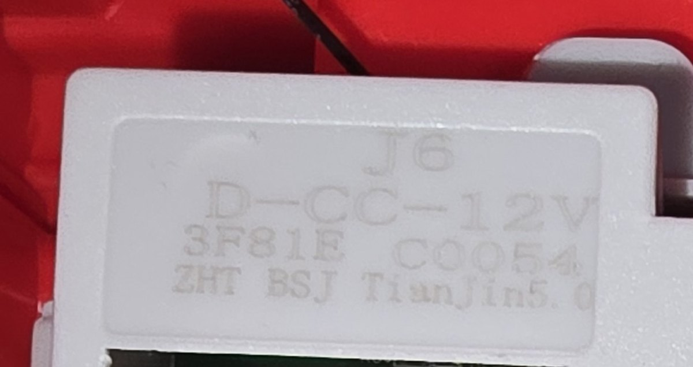
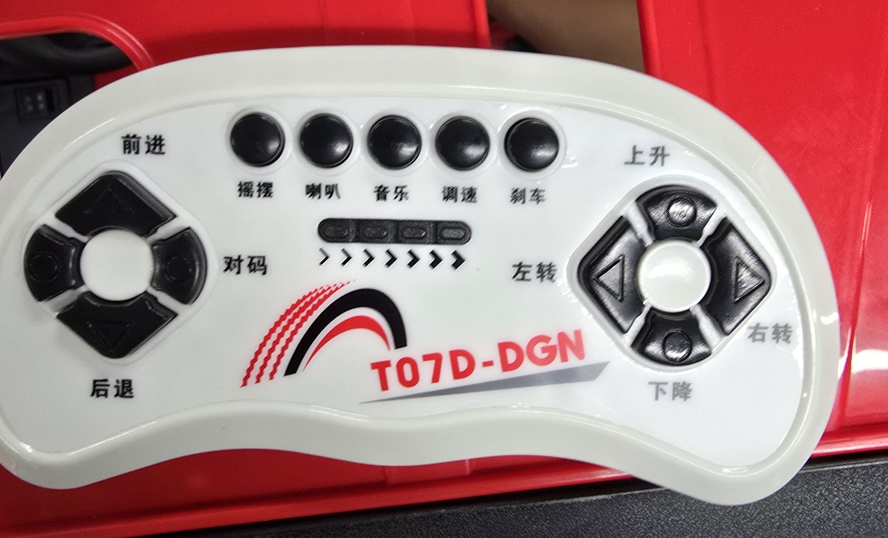
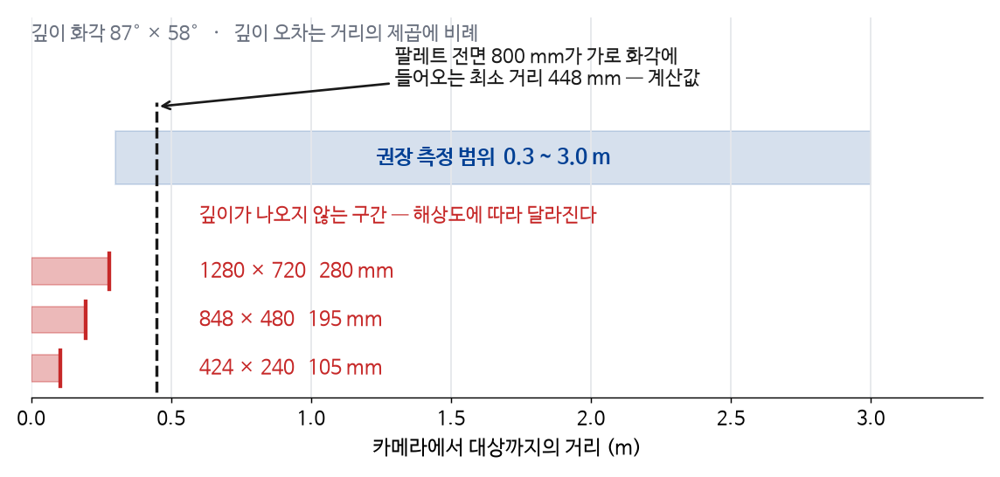

깊이 영상에서팔레트·포켓 검출
구현
포켓 위치·방향을로봇 기준으로 표시
장애물을 피하며팔레트에 접근
시뮬레이션 연결
포크를 넣고들어 올림
목적지까지운반·하역



치수·무게·승강 범위캐리지 장착점 좌표·기울기카메라 시야 가림 확인
다음 주
배선 종단·모터 정격명령 입력 방식 선택속도·조향각·포크 높이 취득 경로
여러 조건 임무 재실행성공률과 실패 원인 정리근접 포켓 추적 · 관측 소실 시 정지
다음 주 → 그다음
지게차 표준 운용 방법시험용 팔레트 제작 방법동봉 팔레트 실측·대조
다음 주 보고